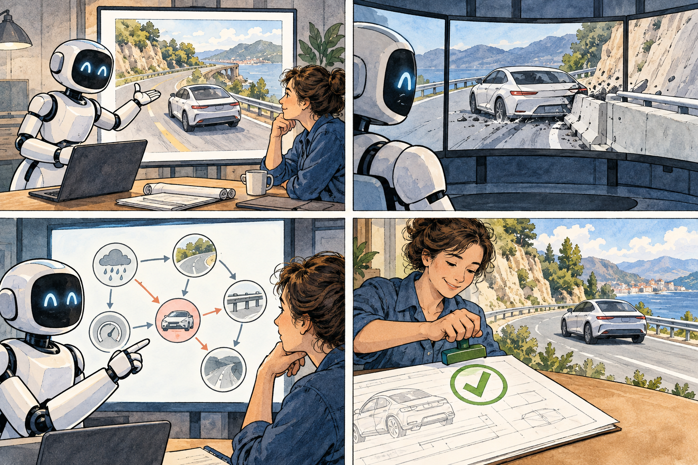

Suppose you have hired an imaginative but occasionally unreliable engineer. Would you let that person steer the car? Probably not. Would you ask them to invent hundreds of difficult crash tests, then run every proposal through a simulator and deterministic checks? That is a more interesting offer.
PlannerForge, submitted 8 September, treats LLM agents as workers across the motion-planner testing pipeline: scenario generation, retrieval, modification, execution, assessment, enhancement and comparison. Ten off-the-shelf models were tested under five prompting conditions.
Open 20–35B models matched commercial APIs on several tasks. More importantly, the agent's creativity was surrounded by schemas, simulation and validation. It did not get final authority merely because its prose looked competent.
Can we test whether the explanation is causal?
CASCADE, submitted 7 September, attacks a quieter problem. A driving model may claim, “I slowed because the pedestrian approached the crossing.” But ordinary language similarity cannot prove that it identified the correct actor, place, action and dependency. CASCADE supplies human annotations for 2,066 clips, including more than 34,000 structured elements, 8,600 time-stamped actions and 3,700 causal links. Reasoning can be scored element by element instead of approved by another model that merely likes the wording.

And when should the machine call a person?
Regret Dominates Surprise, published 4 September, separates novelty from danger. Its gate combines surprise—“is this unlike expectation?”—with regret—“was a safer alternative available?” A 100-seed stochastic simulation reported near-zero silent failures and risk detection about 17.5 times faster than a sensor-only baseline. But a retrospective test across 208 AgentHarm scenarios found that the gate improved refusal only for models already above 80% baseline refusal. Governance amplified safety; it did not manufacture it.
CoLMIN adds another architectural clue: several vehicles can negotiate multiple candidate intentions and reflect on poor outcomes, but average high-level reasoning took 29.67 seconds. Slow semantic negotiation must remain separate from fast low-level control.
Evidence boundary
PlannerForge remains open-loop and geographically concentrated. CASCADE encodes expert causal interpretation, not experimental causation. The regret gate is simulation and retrospective evidence. CoLMIN is CARLA, not a public road. This is serious progress in verification infrastructure, but not a licence for unattended deployment.
What this changes for LLM4TR
PlannerForge is a Component Generator and Decision Facilitator; CASCADE strengthens Knowledge Encoding; the safety gate governs decision authority. Together they suggest a new review axis: where does independent verification sit relative to the model's action?
Beyond the papers: verification became the week's public theme
The verification turn was visible outside academia too. On 8 September, Kodiak AI said its long-haul driverless safety case had reached 93% material completion. Whatever one thinks of a company-defined readiness metric, the important idea is the safety case itself: deployment is being framed as a structured argument supported by evidence, not merely as a model-performance claim.
On 9 September, Washington, D.C. announced a roadside-sensing project intended to independently monitor how autonomous vehicles behave alongside human-driven traffic. That is an unusually important institutional move. Instead of relying only on the vehicle developer's own telemetry, the city is creating an external observational layer—exactly the kind of separation between actor and verifier that this week's research papers keep pointing toward.
By 10–11 September, the same language was spreading into broader infrastructure discussion. A Forbes Technology Council article argued that transportation's practical AI lesson is the combination of reliable data, integration and human judgement, while the World Economic Forum warned that critical-infrastructure AI adoption must not outrun operational visibility. Different contexts, same architecture: intelligence needs an independent way to be seen, tested and stopped.
Sources & reading trail
- PlannerForge — 8 Sep 2026
- CASCADE — 7 Sep 2026
- Regret Dominates Surprise — 4 Sep 2026
- CoLMIN — 4 Sep 2026
- Kodiak AI — long-haul safety-case readiness update (8 Sep 2026)
- Cities Today — Washington, D.C. deploys roadside AI to monitor AVs (9 Sep 2026)
- Forbes Technology Council — Intelligent infrastructure and AI implementation (10 Sep 2026)
- World Economic Forum — Why visibility must come first in critical-infrastructure AI (11 Sep 2026)
Reading note: Claims and figures are drawn from the cited studies and presented with their stated limits. Preprints, simulations and benchmarks should not be read as field validation unless the source itself reports field evidence.